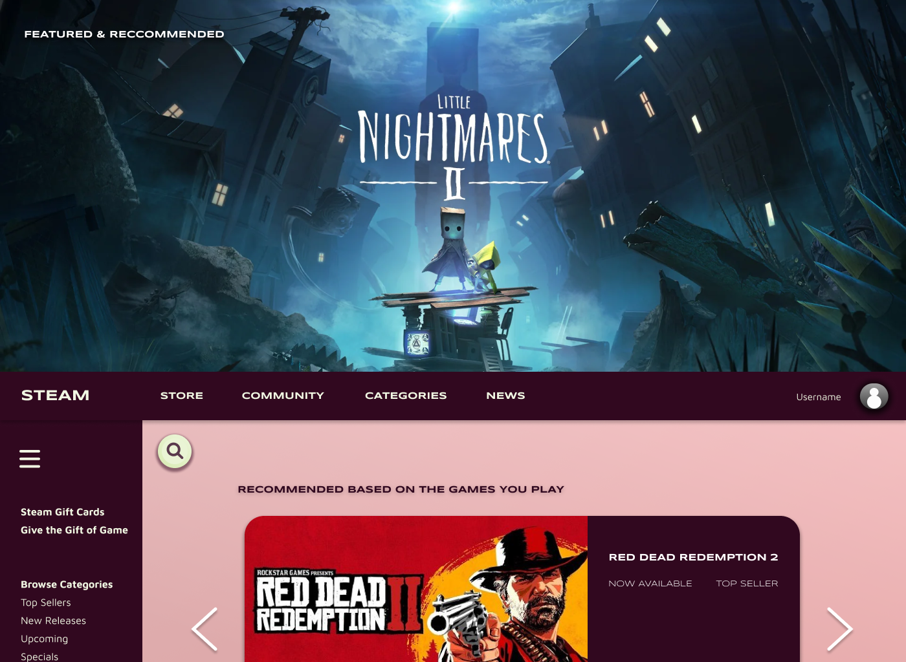
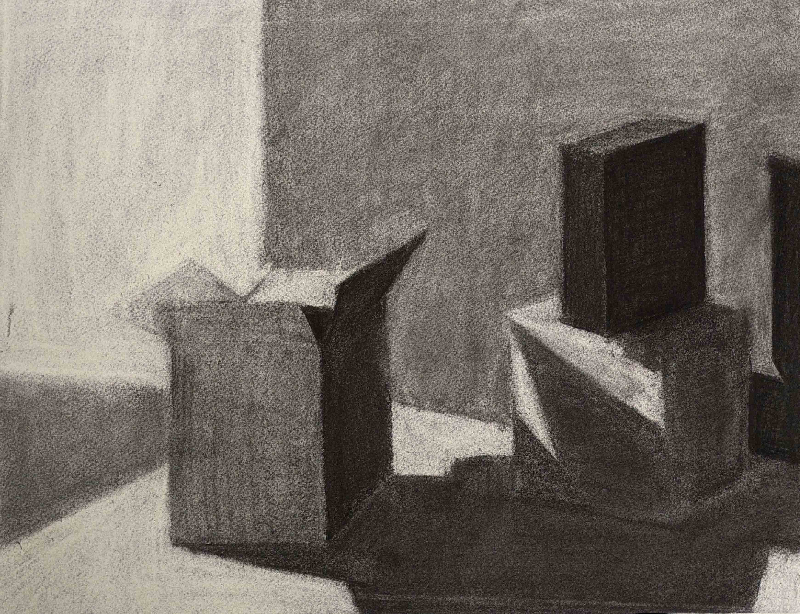
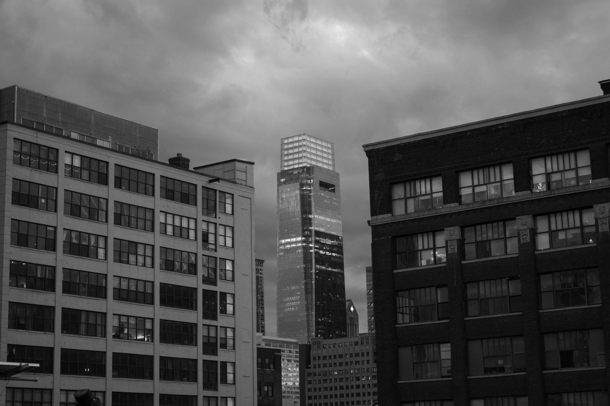
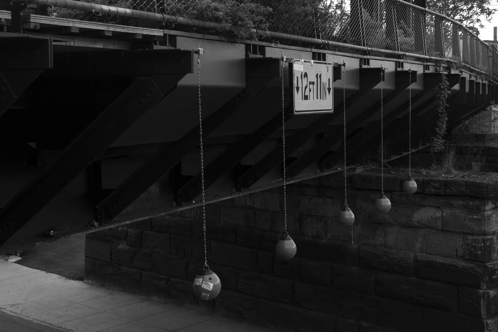
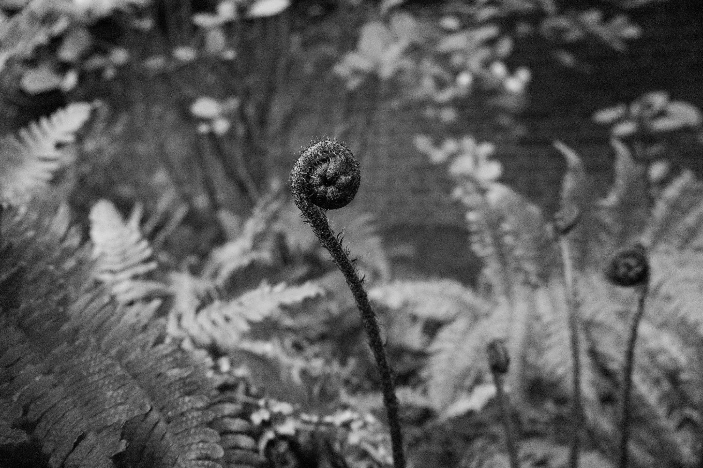

My Portfolio
Discover a selection of my featured projects and creative works.
UI/UX
Philly Codefest: Designed a survey page for an accessibility-focused app, enhancing user engagement for first-time users.

Steam Interface Redesign: Redesigned the user interface to improve navigation and address user pain points.

Exairon Operator Portal: Collaborated to improve usability and accessibility of the operator portal.
Illustrations

Exploring texture and composition through charcoal drawings.

Study of reflective surfaces and light using charcoal.

Capturing flow and depth in drapery studies.
Photography

Urban landscapes of Philadelphia.

Architectural details.

Close-up photo of natural patterns and forms.